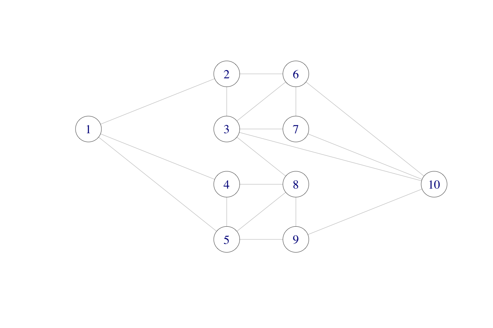
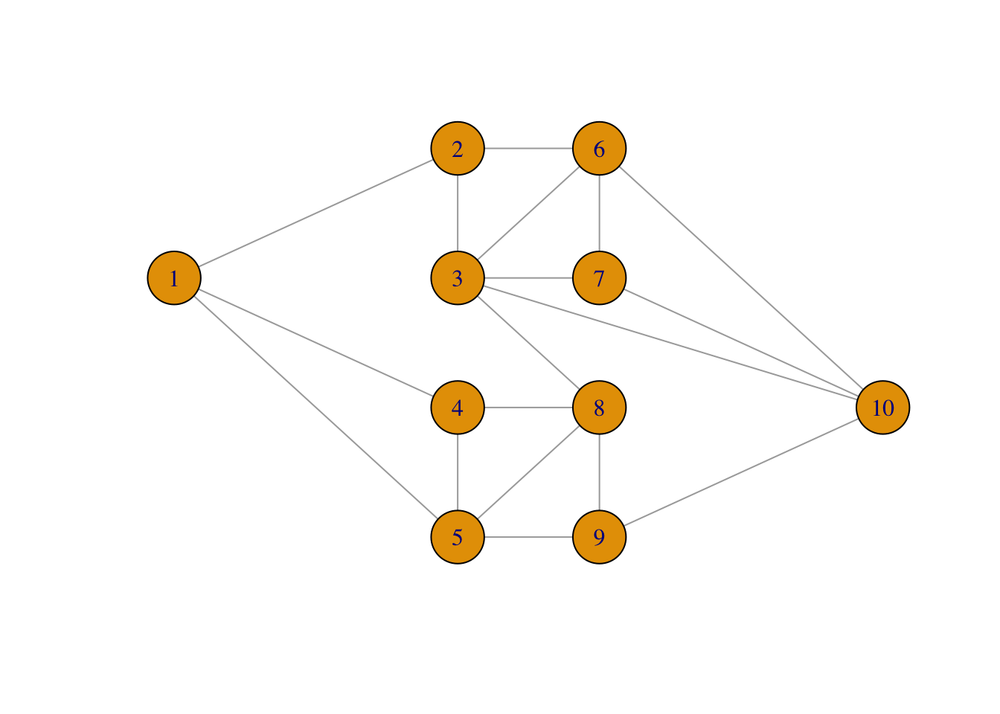
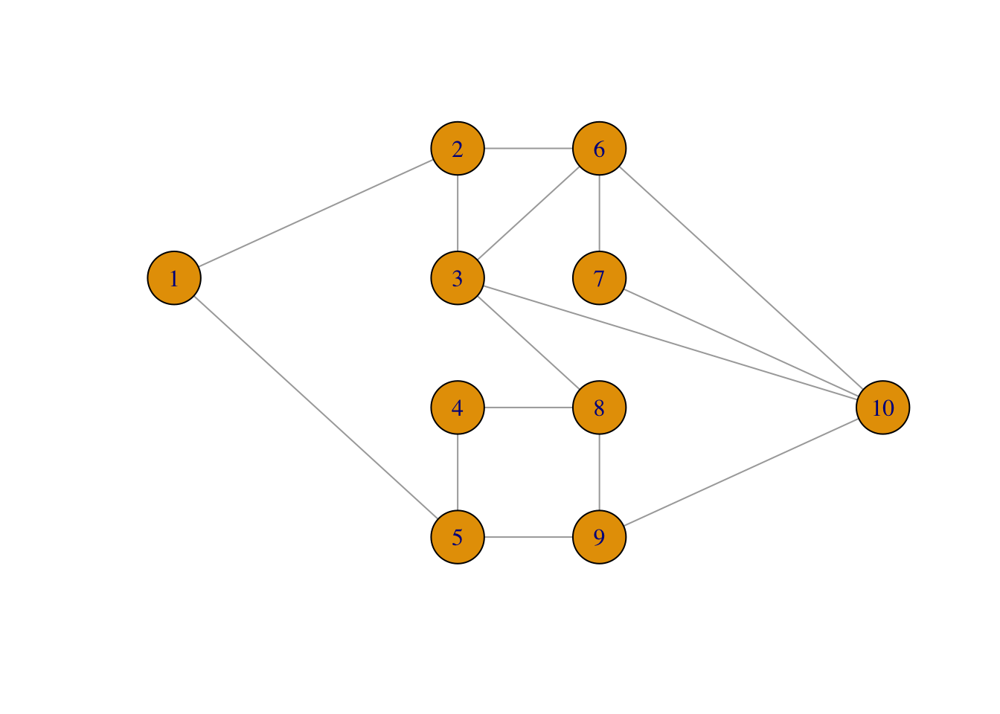

5.3 Network failure
Consider the following network consisting of ten nodes and with some of the nodes connected.

The network could be a computer network with ten computers. The different connections (edges) may “fail” independently with probability \(p\), and the question we will take an interest in is what is the probability that node 1 and node 10 become disconnected?
The network of nodes can be represented as a graph adjacency matrix \(A\) such that \(A_{ij} = 1\) if and only if there is an edge between \(i\) and \(j\) (and \(A_{ij} = 0\) otherwise).
A ## Graph adjacency matrix## [,1] [,2] [,3] [,4] [,5] [,6] [,7] [,8] [,9] [,10]
## [1,] 0 1 0 1 1 0 0 0 0 0
## [2,] 1 0 1 0 0 1 0 0 0 0
## [3,] 0 1 0 0 0 1 1 1 0 1
## [4,] 1 0 0 0 1 0 0 1 0 0
## [5,] 1 0 0 1 0 0 0 1 1 0
## [6,] 0 1 1 0 0 0 1 0 0 1
## [7,] 0 0 1 0 0 1 0 0 0 1
## [8,] 0 0 1 1 1 0 0 0 1 0
## [9,] 0 0 0 0 1 0 0 1 0 1
## [10,] 0 0 1 0 0 1 1 0 1 0To compute the probability that 1 and 10 become disconneted by Monte Carlo integration, we need to sample (sub)graphs by randomly removing some of the edges. This is implemented using the upper triangular part of the (symmetric) adjacency matrix.
simNet <- function(Aup, p) {
ones <- which(Aup == 1)
Aup[ones] <- sample(c(0, 1), length(ones),
replace = TRUE, prob = c(p, 1 - p))
Aup + t(Aup)
}It is fairly fast to sample even a large number of random graphs this way.
Aup <- A
Aup[lower.tri(Aup)] <- 0
system.time(replicate(1e5, {simNet(Aup, 0.5); NULL}))## user system elapsed
## 1.972 0.063 2.038The second function we need to implement checks network connectivity. It relies on the fact that there is a path from node 1 to node 10 consisting of \(k\) edges if and only if \(A^k_{1,10} > 0\). We see directly that such a path needs to consist of at least \(k = 3\) edges. Also, we don’t need to check paths with more than \(k = 9\) edges as they will contain the same node multiple times and can thus be shortened.
disconAB <- function(A) {
k <- 3
Apow <- A %*% A %*% A ## A%^%3
while(Apow[1, 10] == 0 & k < 9) {
Apow <- Apow %*% A
k <- k + 1
}
Apow[1, 10] == 0 ## TRUE if A and B not connected
}Estimating probability of nodes 1 and 10 being disconnected using
Monte Carlo integration.
seed <- 27092016
set.seed(seed)
n <- 1e5
tmp <- replicate(n, disconAB(simNet(Aup, 0.05)))
muhat <- mean(tmp)As this is a (random) approximation, we should report not only the Monte Carlo estimate but also the confidence interval. Since the estimate is an average of 0-1-variables, we can estimate the variance, \(\sigma^2\), of the individual terms using that \(\sigma^2 = \mu (1 - \mu)\).
muhat + 1.96 * sqrt(muhat * (1 - muhat) / n) * c(-1, 0, 1)## [1] 0.0002257328 0.0003400000 0.0004542672Importance sampling.
impw <- function(Aup, A0, p, p0) {
w <- disconAB(A0)
if (w) {
b <- 18 - sum(Aup[A0 == 1])
w <- ((1 - p0) / (1 - p))^18 *
(p0 * (1 - p) / (p * (1 - p0)))^b
}
as.numeric(w)
}This uses formula (6.48) in the book for computing the importance weights. For the IS estimator they are multiplied by the indicator that A and B are disconnected.
set.seed(seed)
tmp <- replicate(n, impw(Aup, simNet(Aup, 0.2), 0.2, 0.05))
muhatIS <- mean(tmp)Confidence interval using empirical variance estimate \(\hat{\sigma}^2\).
muhatIS + 1.96 * sd(tmp) / sqrt(n) * c(-1, 0, 1)## [1] 0.0002619838 0.0002960900 0.0003301962c(sd(tmp), sqrt(muhat * (1 - muhat))) ## The two standard deviations## [1] 0.005502716 0.018435954The ratio of variances is estimated as
muhat * (1 - muhat) / var(tmp)## [1] 11.22476We need around 11 times more naive samples when compared to importance sampling to obtain the same precision. A benchmark will show that the extra computing time for importance sampling is small compared to the reduction of variance. It is worth the coding effort if used repeatedly, but not if it is a one-off computation.
The graph is small enough for complete enumeration and thus the computation of an exact solution. There are \(2^{18} = 262,144\) different networks with any number of the edges failing, so complete enumeration is possible. To systematically walk through each possible combination of edges failing, we use the function intToBits that convert an integer to its binary representation for integers from 0 to 262,143. This is a quick and convenient way of representing all the different fail and non-fail combinations for the edges.
ones <- which(Aup == 1)
p <- 0.05
prob <- numeric(2^18)
for(i in 0:(2^18 - 1)) {
on <- as.numeric(intToBits(i)[1:18])
nr <- sum(on)
Atmp <- Aup
Atmp[ones] <- on
if(disconAB(Atmp + t(Atmp)))
prob[i + 1] <- p^(18 - nr) * (1 - p)^nr
}The probability of nodes 1 and 10 disconnected can then be computed as follows.
sum(prob)## [1] 0.000288295This number should be compared to the estimates computed above. For a more complete comparison, we have used importance sampling with edge fail probability ranging from 0.1 to 0.4, see Figure 5.3. The results show that a failure probability of 0.2 is close to optimal in terms of giving an importance sampling estimate with minimal variance. For smaller values, the event that 1 and 10 become disconnected is too rare, and for larger values the importance weights become too variable. A choice of 0.2 strikes a good balance.
Figure 5.3: Confidence intervals for importance sampling estimates of network nodes 1 and 10 being disconnected under independent edge failures with probability 0.05. The red line is the true probability computed by complete enumeration.
5.3.1 Object oriented implementation
network <- function(A, p) {
Aup <- A
Aup[lower.tri(Aup)] <- 0
ones <- which((Aup == 1))
structure(list(A = A, Aup = Aup, ones = ones, p = p),
class = "network")
}
myNet <- network(A, p = 0.05)
str(myNet)## List of 4
## $ A : num [1:10, 1:10] 0 1 0 1 1 0 0 0 0 0 ...
## $ Aup : num [1:10, 1:10] 0 0 0 0 0 0 0 0 0 0 ...
## $ ones: int [1:18] 11 22 31 41 44 52 53 63 66 73 ...
## $ p : num 0.05
## - attr(*, "class")= chr "network"Generic functions.
sim <- function(x, ...)
UseMethod("sim")
failure <- function(x, ...)
UseMethod("failure")The first method
sim.network <- function(x) {
Aup <- x$Aup
Aup[x$ones] <- sample(c(0, 1), length(x$ones),
replace = TRUE, prob = c(x$p, 1 - x$p))
Aup + t(Aup)
}and the second method
failure.network <- function(x, n, p = NULL) {
if (is.null(p)) { ## Naive simulation
tmp <- replicate(n, disconAB(sim(x)))
muhat <- mean(tmp)
se <- sqrt(muhat * (1 - muhat) / n)
} else { ## Importance sampling
p0 <- x$p
x$p <- p
tmp <- replicate(n, impw(x$Aup, sim(x), p, p0))
se <- sd(tmp) / sqrt(n)
muhat <- mean(tmp)
}
value <- muhat + 1.96 * se * c(-1, 0, 1)
names(value) <- c("low", "estimate", "high")
value
}Test
set.seed(seed) ## Resetting seed
failure(myNet, n)## low estimate high
## 0.0002257328 0.0003400000 0.0004542672set.seed(seed) ## Resetting seed
failure(myNet, n, p = 0.2)## low estimate high
## 0.0002619838 0.0002960900 0.0003301962Check that the results are the same as on ??.
Benchmarking
system.time(replicate(1e5, {simNet(Aup, 0.5); NULL}))## user system elapsed
## 1.961 0.064 2.030system.time(replicate(1e5, {sim(myNet); NULL}))## user system elapsed
## 2.181 0.048 2.233One should expect a small computational overhead due to method dispatching, that is, the procedure that R uses to look up the appropriate sim method for an object of class network. This is done 100,000 times in the benchmark example above. In this case, that overhead is almost negligible.
The generic print function already exists. We implement a method for class network.
print.network <- function(x) {
cat("#vertices: ", nrow(x$A), "\n")
cat("#edges:", sum(x$Aup), "\n")
cat("p = ", x$p, "\n")
}myNet ## Implicitly calls 'print'## #vertices: 10
## #edges: 18
## p = 0.05Using igraph.
library(igraph)
net <- graph_from_adjacency_matrix(A, mode = "undirected")
net## IGRAPH afa7fc6 U--- 10 18 --
## + edges from afa7fc6:
## [1] 1-- 2 1-- 4 1-- 5 2-- 3 2-- 6 3-- 6 3-- 7 3-- 8 3--10 4-- 5 4-- 8
## [12] 5-- 8 5-- 9 6-- 7 6--10 7--10 8-- 9 9--10The igraph package supports a vast number of graph computation, manipulation and visualization tools.
Plotting an igraph.
## You can generate a layout ...
net_layout <- layout_(net, nicely())
## ... or you can specify one yourself
net_layout <- matrix(
c(-20, 1,
-4, 3,
-4, 1,
-4, -1,
-4, -3,
4, 3,
4, 1,
4, -1,
4, -3,
20, -1),
ncol = 2, nrow = 10, byrow = TRUE)Plotting an igraph
plot(net, layout = net_layout, asp = 0)
Simulation method for igraph
sim.igraph <- function(x, p) {
nr <- ecount(x)
deledges <- sample(c(TRUE, FALSE), nr,
replace = TRUE, prob = c(p, 1 - p))
delete_edges(x, which(deledges))
}A simulated graph
plot(sim(net, 0.25), layout = net_layout, asp = 0)
This is slower than using the matrix representation alone as in simNet.
system.time(replicate(1e5, {sim(net, 0.5); NULL}))## user system elapsed
## 3.945 1.382 5.334One could also implement the function for testing if nodes 1 and 10 are disconnected using the shortest_paths function, but this is not faster than the simple matrix multiplications used in disconAB either, though it could be for larger graphs.